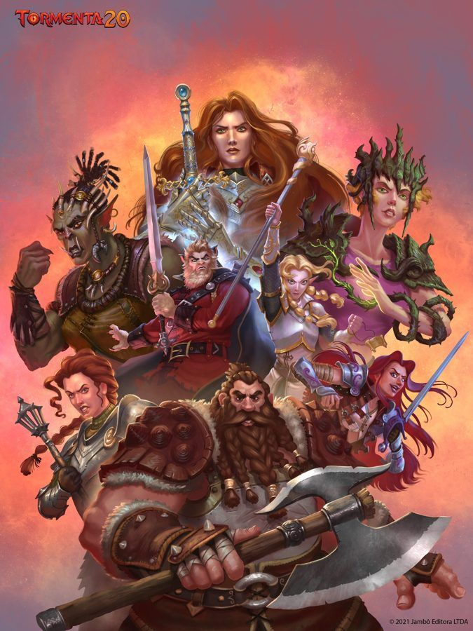

Tormenta 20
Classificação indicativa: 12+
Duração média: 120 min
Número de jogadores: 2 a 12 jogadores
Tormenta é um universo de fantasia que abrange romances, histórias em quadrinhos, jogos de RPG em outros produtos. Foi criado em 1999 por Marcelo Cassaro, Rogério Saladino e JM Trevisan, como um encarte especial comemorativo de 50 edições da revista Dragão Brasil. Em 2005, os títulos de Tormenta passaram a ser publicado pela Jambô Editora.
Com mais de 20 anos de publicação, Tormenta é o maior e mais celebrado jogo de RPG de mesa brasileiro. Em 2019, através de uma campanha de financiamento coletivo, foi lançado Tormenta 20, o novo manual de regras básicas do jogo.
Fonte: CASSARO, Marcelo et al. Tormenta20: livro básico: edição jogo do ano. Porto Alegre: Jambô Editora, 2022.